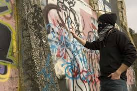
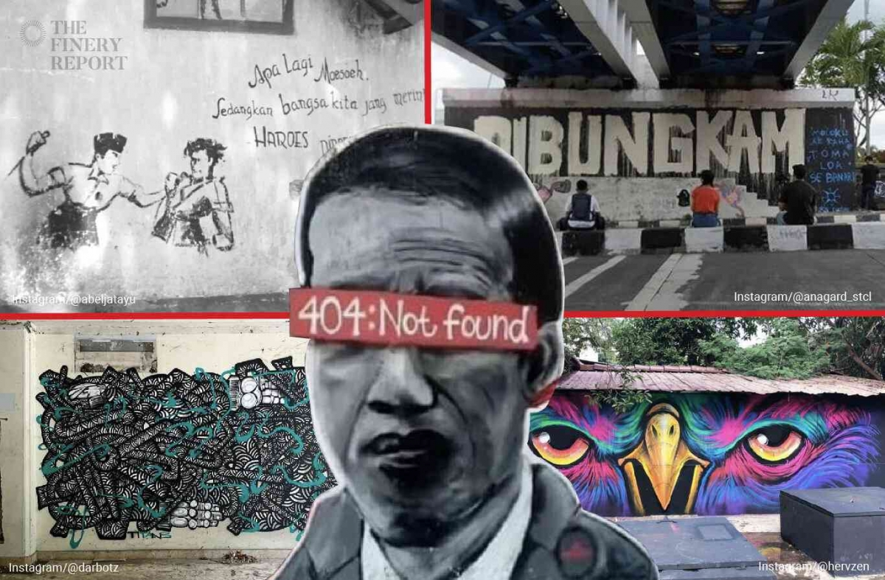
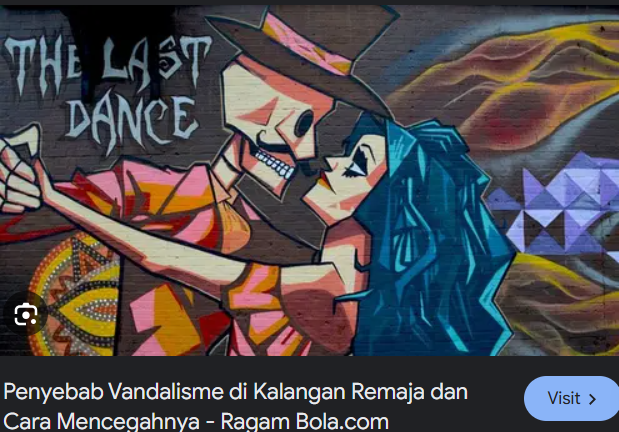

Pengertian Vandalisme
Vandalisme adalah tindakan merusak atau menghancurkan properti publik maupun pribadi secara sengaja tanpa izin.
Tindakan ini bisa berupa coretan di tembok, perusakan fasilitas umum seperti taman, halte bus, atau lampu jalan, serta penghancuran benda-benda yang dimiliki oleh orang lain.

Penyebab Vandalisme
Ada berbagai alasan mengapa seseorang bisa melakukan vandalisme. Beberapa penyebab utama antara lain:
- Frustrasi atau Kemarahan: Beberapa individu melakukan vandalisme sebagai bentuk pelampiasan emosi, terutama ketika merasa marah atau kecewa.
- Pengaruh Kelompok: Tekanan dari kelompok sebaya atau budaya tertentu dapat mendorong seseorang untuk melakukan tindakan ini sebagai bentuk solidaritas atau identitas kelompok.
- Kurangnya Kesadaran Sosial: Pelaku vandalisme sering kali tidak menyadari dampak negatif dari tindakan mereka terhadap masyarakat dan lingkungan.
- Keinginan untuk Menarik Perhatian: Beberapa orang melakukan vandalisme untuk mengekspresikan diri atau agar mendapat perhatian dari orang lain, seperti melalui graffiti.

Dampak Vandalisme
Tindakan vandalisme memberikan dampak yang besar, baik pada tingkat individu maupun masyarakat secara keseluruhan:
- Kerugian Ekonomi: Biaya perbaikan akibat vandalisme seringkali sangat besar, dan dapat membebani pemerintah, perusahaan, atau pemilik properti.
- Penurunan Kualitas Lingkungan: Kerusakan yang ditimbulkan oleh vandalisme merusak keindahan dan kenyamanan lingkungan sekitar.
- Gangguan Psikologis: Korban vandalisme sering merasa tidak aman dan terganggu akibat kerusakan properti mereka.
- Efek Domino: Lingkungan yang sering menjadi target vandalisme cenderung meningkatkan perilaku negatif lainnya, yang dapat merusak tatanan sosial lebih lanjut.

Cara Mengatasi Vandalisme
Ada beberapa cara yang dapat dilakukan untuk mencegah dan mengurangi tindak vandalisme, di antaranya:
- Peningkatan Kesadaran: Edukasi tentang dampak negatif vandalisme dan pentingnya menjaga fasilitas umum harus dimulai sejak dini.
- Pengawasan Lebih Ketat: Pemasangan kamera pengawas di area rawan dapat membantu mengidentifikasi pelaku dan mencegah perbuatan serupa.
- Fasilitas untuk Menyalurkan Kreativitas: Pemerintah atau komunitas dapat menyediakan ruang untuk seni jalanan, seperti dinding graffiti yang legal, sebagai cara menyalurkan ekspresi positif.
- Hukuman yang Tegas: Penegakan hukum yang jelas dan konsisten dapat memberikan efek jera kepada pelaku vandalisme.